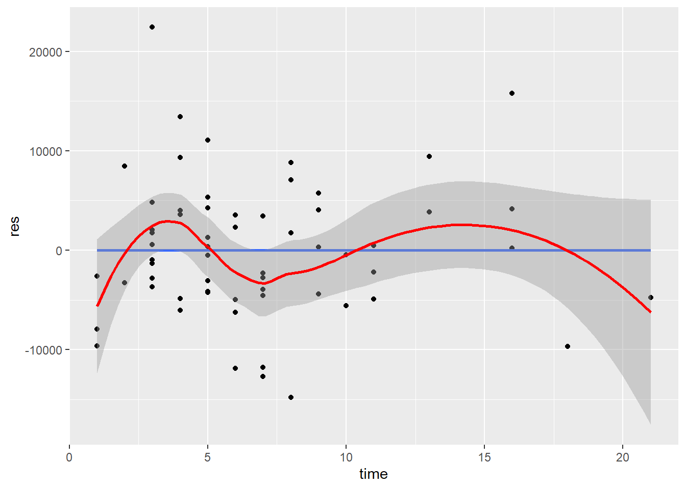
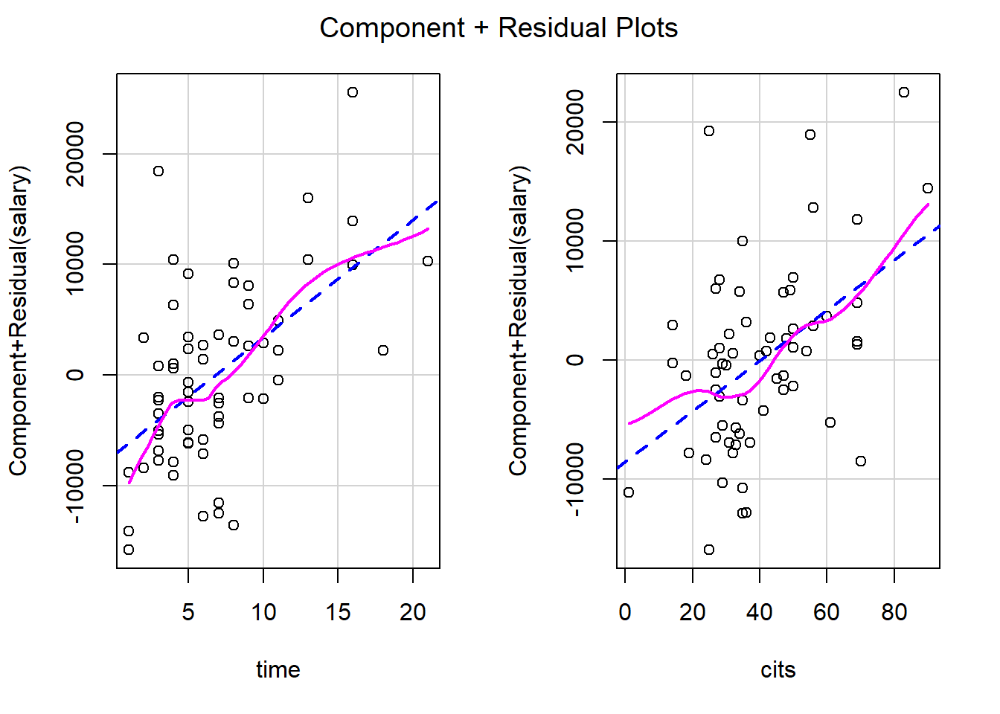
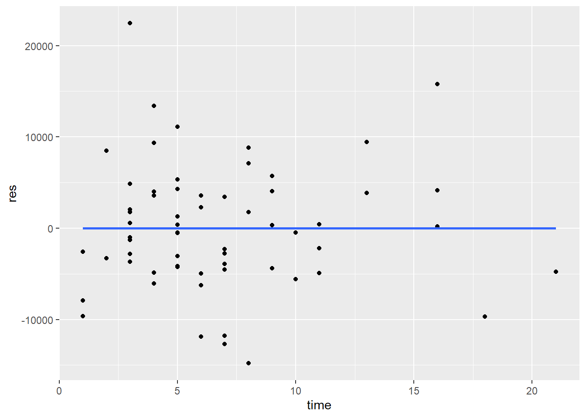

Chapter 5 Multiple Regression Analysis
library(rio); library(ggplot2); library(QuantPsyc); library(psych); library(car); library(lmtest); library(MASS); library(interactions); library(memisc); library(apaTables)Recall: Simple Linear Regression: \(Y=a+bX+e\)
Regression with 2 Independent Variables: \(Y=a+{{b}_{1}}{{X}_{1}}+{{b}_{2}}{{X}_{2}}+e\), where a is the intercept/constant (value of Y when X1 and X2 are both equal to zero), \({{b}_{1}}\ \text{and}\ {{b}_{2}}\) are regression coefficients associated with X1 and X2, respectively, X1 and X2 are raw scores on the independent variables, and e is the error or residual.
Can be extended to incorporate more independent variables: \(Y=a+{{b}_{1}}{{X}_{1}}+{{b}_{2}}{{X}_{2}}+...+{{b}_{k}}{{X}_{k}}+e\), where k is the number of independent variables.
Recall: Simple Linear Regression: \({\hat Y}=a+bX\). Solved for a and b using Least Squares solution that minimizes the sum of squared residuals ( \(SS_{res}\); \(\sum{{{(Y-{\hat Y})}^{2}}=\sum{{{e}^{2}}}}\) )
Intercept: \(a=\bar{Y}-b\bar{X}\)
Slope: \(b=\frac{\sum{xy}}{\sum{{{x}^{2}}}}=\frac{\sum{(X-\bar{X})(Y-\bar{Y})}}{\sum{{{(X-\bar{X})}^{2}}}}\)
Regression with 2 Independent Variables: \({\hat Y}=a+{{b}_{1}}{{X}_{1}}+{{b}_{2}}{{X}_{2}}\)
Now, \({{b}_{1}}\ \text{and}\ {{b}_{2}}\) are considered partial regression coefficients associated with variables X1 and X2, respectively. X1 and X2 are used together in predicting Y. \({{b}_{1}}\) is the partial regression coefficient for Y on X1 with X2 in the regression equation/model. \({{b}_{2}}\) is the partial regression coefficient for Y on X2 with X1 in the regression equation/model. Still trying to minimize the difference between observed Y scores and predicted Y scores (i.e., \(\sum{(Y-{\hat Y})}^{2}\) ; Least Squares solution) when solving for the intercept (a) and the partial regression coefficients ( \({{b}_{1}}\) and \({{b}_{2}}\) ).
Using our professors’ salary example, we want to estimate/predict Salary from Time since Ph.D. was earned (X1) and Number of citations (X2). Regress Salary on Time since Ph.D. and Number of citations.
To compute the partial regression coefficients, \({{b}_{1}}\ \text{and}\ {{b}_{2}}\), let’s first calculate the partial standardized regression coefficients or beta weights ( \(\beta_1\) and \(\beta_2\) ):
\(b_1 = \beta_1\frac{{s_Y}}{{s_{X1}}}\) ; \(b_2={\beta_2}\frac{{s_Y}}{{s_{X2}}}\)
In simple linear regression, the standardized regression coefficient (Beta) is the correlation coefficient between X and Y:
\[\beta =b\frac{{{s}_{x}}}{{{s}_{y}}}=\frac{\sum{xy}\sqrt{\sum{{{x}^{2}}}}\sqrt{n-1}}{\sum{{{x}^{2}}}\sqrt{n-1}\sqrt{\sum{{{y}^{2}}}}}=\frac{\sum{xy}}{\sqrt{\sum{{{x}^{2}}}\sqrt{\sum{{{y}^{2}}}}}}={{r}_{xy}}\]
In Simple Linear Regression, the standardized regression coefficient (Beta) has fixed upper lower and upper limits a correlation coefficient (i.e., ranges from -1 to +1).
In Multiple Regression, the partial standardized regression coefficients (Beta weights) no longer have this fixed lower and upper limit. Generally speaking, however, the partial standardized regression coefficient should not exceed the absolute value of 1. If it does, this may be an indication of a problem among the independent variables (to be discussed later). They are called partial standardized regression coefficients because they are the partial slopes of an equation using standardized scores (i.e., z scores): \(z_{\hat y}={{\beta }_{1}}{{z}_{1}}+{{\beta }_{2}}{{z}_{2}}\), where \({{\beta }_{1}}\ and\ {{\beta }_{2}}\) are standardized regression coefficients; \({{z}_{1}}\ and\ {{z}_{2}}\) are standard scores on X1 and X2, respectively.
Unstandardized regression coefficients indicate the direction and by how many units Y will change with a 1 unit increase in X. They are expressed in their original scale of measurement of the independent variable (e.g., number of years). Recall that the mean of z scores is zero and the standard deviation is 1. Because the standard deviation of z scores is 1, a unit change in \(z_x\) indicates a change of one standard deviation in X. Thus, standardized regression coefficients indicate the direction and by how many standard deviations Y will change with 1 standard deviation increase in X.
The relationships between standardized regression coefficients and correlations with two independent variables are below:
\[{{\beta }_{1}}=\frac{{{r}_{Y1}}-{{r}_{Y2}}{{r}_{12}}}{1-r_{12}^{2}}\]
\[{{\beta }_{2}}=\frac{{{r}_{Y2}}-{{r}_{Y1}}{{r}_{12}}}{1-r_{12}^{2}}\]
When we interpret the partial regression coefficient for one independent variable, we should state that we are holding the other independent variable constant.
Using the Professor’s salary example, we would like to regress Salary (Y) on Time (X1) and Citations (X2). We get
\[{{\beta }_{1}}=\frac{{{r}_{Y1}}-{{r}_{Y2}}{{r}_{12}}}{1-r_{12}^{2}}=\frac{0.608-(0.55)(0.373)}{1-{{(0.373)}^{2}}}=0.468\] \[{{\beta }_{2}}=\frac{{{r}_{Y2}}-{{r}_{Y1}}{{r}_{12}}}{1-r_{12}^{2}}=\frac{0.55-(0.608)(0.373)}{1-{{(0.373)}^{2}}}=0.375\] With every 1 standard deviation increase in Time, predicted Salary increases by about .47 standard deviations while holding number of citations constant. With every 1 standard deviation increase in number of citations, predicted Salary increases by about .38 standard deviations while holding time since Ph.D. was earned constant.
Why do we state that we are holding the other independent variable constant?
- In multiple regression, there is redundancy or shared variance between X1 and X2 which must now be taken into account. For example, if two predictors, X1 and X2, are positively correlated and both affect Y (are correlated with the criterion/dependent variable), then the change in Y that is associated with an increase in X1 is partly caused by the increase in X1 and partly caused by the corresponding increase in X2. The regression coefficient or effect of a given predictor variable should indicate the change in Y produced by a unit increase in that predictor variable alone, that is, when the other predictor variable does not change. Thus, when computing multiple regression statistics for a given predictor, we must hold the effects of the other predictor variable statistically constant to determine the extent to which changes in Y result from a change in a given predictor alone. This basically means that multiple regression statistics, such as the partial regression coefficients (standardized or unstandardized), remove the variance from X1 that it shares with X2 in the multiple regression model.
Once we have calculated the partial standardized regression coefficients, convert them back to original scale (time in years; number of citations) to get the unstandardized regression coefficients and intercept.
- Multiple R is the correlation coefficient between the observed and predicted Y values ( \({r_{Y{\hat Y}}}\); ranges from 0 to 1). The Squared multiple correlation, or R Square (\({{R}^{2}}\)), is interpreted as the proportion of variance in the criterion/dependent variable Y that can be explained by the predictor variables X1 and X2. The adjusted R Square is an adjustment to better reflect the fit of the model in the population.
\[R=\sqrt{\frac{r_{Y1}^{2}+r_{Y2}^{2}-2{{r}_{Y1}}{{r}_{Y2}}{{r}_{12}}}{1-r_{12}^{2}}}\]
\[R=\sqrt{{{\beta }_{1}}{{r}_{Y1}}+{{\beta }_{2}}{{r}_{Y2}}}\]
- Multiple R can never be smaller than the absolute value of the largest correlation between a predictor variable and the dependent variable.
\({{R}^{2}}=\frac{S{{S}_{reg}}}{\sum{{{y}^{2}}}}=\frac{S{{S}_{reg}}}{S{{S}_{total}}}\) , where \(S{S_{reg}} = \sum {{{({\hat Y} - \bar Y)}^2}}\) and \(S{S_{total}} = \sum {{{(Y - \bar Y)}^2}}\).
\({{R}^{2}}=\frac{r_{Y1}^{2}+r_{Y2}^{2}-2{{r}_{Y1}}{{r}_{Y2}}{{r}_{12}}}{1-r_{12}^{2}}\)
\({{R}^{2}}={{\beta }_{1}}{{r}_{Y1}}+{{\beta }_{2}}{{r}_{Y2}}\)
R Square in multiple regression is also referred to as the Coefficient of Multiple Determination (Indicating the amount of variance in the dependent variable explained by the independent variables).
Coefficient of Multiple Alienation: \(1-{{R}^{2}}\), indicating the amount of variance in the dependent variable not explained by the independent variables.
\(R_{adj}^{2}={{R}^{2}}-\frac{(1-{{R}^{2}})k}{n-k-1}\) where n = sample size and k = the number of independent variables included in the model.
5.1 F Test and Partial F Test
Just as in Simple Linear Regression, we can calculate an F ratio to test the regression of Y on both X1 and X2. \(F=\frac{M{{S}_{reg}}}{M{{S}_{res}}}\) with \(d{{f}_{reg}}\) in the numerator and \(d{{f}_{res}}\) in the denominator (df for the Regression Sum of Squares = k; df for the Residual Sum of Squares = n – k – 1). If the F ratio exceeds the critical value with ( \(d{{f}_{reg}}\), \(d{{f}_{res}}\) ) at alpha = .05, we reject the null that the regression of Y on both X1 and X2 is equal to zero. That is, we are testing whether R Square is significantly different from zero:
\(F=\frac{{{R}^{2}}(n-k-1)}{(1-{{R}^{2}})k}\tilde{\ }df=k\ \text{and}\ n-k-1\)
The null hypothesis of the F test is that all partial regression coefficients are equal to zero.
Three Questions That can be Answered with F tests:
Overall test. Taken collectively, does the entire set of IVs (or equivalently, the fitted model itself) contribute significantly to the prediction of Y?
Test for addition of a single variable. Does the addition of one particular IV of interest add significantly to the prediction of Y achieved by other IVs already present in the model?
Test for addition of a group of variables. Does the addition of some group of IVs of interest add significantly to the prediction of Y obtained through other IVs already present in the model?
5.1.1 Overall test (F Test)
\[F = \frac{{M{S_{reg}}}}{{M{S_{res}}}} = \frac{{S{S_{reg}}/k}}{{S{S_{res}}/(n - k - 1)}}\]
How many degrees of freedom for the numerator?
How many degrees of freedom for the denominator?
5.1.2 Partial F test for additional variable(s)
Add k IVs to the model with p IVs already in the model:
\[F = \frac{{[S{S_{reg}}(full) - S{S_{reg}}(reduced)]/k}}{{S{S_{res}}(full)/[n - (p + k) - 1]}} = \frac{{[S{S_{reg}}(full) - S{S_{reg}}(reduced)]/k}}{{M{S_{res}}(full)}}\]
This partial F test compares two models: one with p IVs and the other with (p+k) IVs.
df for the numerator is k;
df for the denominator is [n-(p+k)-1]
Estimate both models
In R,
mydata <- import("data/profs.sav")
model_full <- lm(salary ~ time + cits, data = mydata)
model_reduced <- lm(salary ~ time, data = mydata)- Conduct Partial F test using the
anova()function
anova(model_full, model_reduced)## Analysis of Variance Table
##
## Model 1: salary ~ time + cits
## Model 2: salary ~ time
## Res.Df RSS Df Sum of Sq F Pr(>F)
## 1 59 2926312249
## 2 60 3623032005 -1 -696719756 14.047 0.0004078 ***
## ---
## Signif. codes: 0 '***' 0.001 '**' 0.01 '*' 0.05 '.' 0.1 ' ' 1Variables Added in Order, and Variables Added Last
Recall: A partial F test compares two models
Type I F test is for variables added in order
- The current model is compared to the previous model with one IV less
- Order of entry matters
Type III F test is for variables added last -The full model is compared to the model with all IVs except for the one IV currently under consideration
- Order of entry does not matter
It is more important to know which models you are comparing than which F test (Type I or Type III) you use!
Type I F test (using Type I Sum of Squares). This is the default in the
anovafunction.
anova(model_full)## Analysis of Variance Table
##
## Response: salary
## Df Sum Sq Mean Sq F value Pr(>F)
## time 1 2123587818 2123587818 42.816 1.596e-08 ***
## cits 1 696719756 696719756 14.047 0.0004078 ***
## Residuals 59 2926312249 49598513
## ---
## Signif. codes: 0 '***' 0.001 '**' 0.01 '*' 0.05 '.' 0.1 ' ' 1- Type III F test (using Type III Sum of Squares). Use the
Anovafunction from thecarpackage.
car::Anova(model_full, type = "III")## Anova Table (Type III tests)
##
## Response: salary
## Sum Sq Df F value Pr(>F)
## (Intercept) 1.3185e+10 1 265.842 < 2.2e-16 ***
## time 1.0834e+09 1 21.844 1.761e-05 ***
## cits 6.9672e+08 1 14.047 0.0004078 ***
## Residuals 2.9263e+09 59
## ---
## Signif. codes: 0 '***' 0.001 '**' 0.01 '*' 0.05 '.' 0.1 ' ' 15.2 Testing the Partial Regression Coefficients
Just as in Simple Linear Regression, you can test the significance of a partial regression coefficient (slope) b to see if it is significantly different from zero.
- Recall the Variance of Estimate: The variance of estimate indicates the variance of the scores about the regression line. It is the variance of the residuals.
\(s_{y.x}^{2}=\frac{\sum{{{(Y-{\hat Y})}^{2}}}}{n-k-1}=\frac{S{{S}_{res}}}{n-k-1}\)
Recall: \(M{{S}_{res}}=\frac{\sum{{{(Y-{\hat Y})}^{2}}}}{n-k-1}=\frac{S{{S}_{res}}}{d{{f}_{res}}}\)
- Recall the Standard Error of Estimate: The standard error of estimate is the square root of the variance of estimate or the standard deviation of the residuals.
\[{{s}_{y.x}}=\sqrt{\frac{\sum{{{(Y-{\hat Y})}^{2}}}}{n-k-1}}=\sqrt{\frac{S{{S}_{res}}}{n-k-1}}\]
- When testing whether the partial slope or partial regression coefficient is significantly different from zero, the standard error associated with the slope must be calculated. This differs slightly from the formula used in Simple Linear Regression due to the shared variance between the independent variables that must be taken into account:
\({{s}_{b1}}=\sqrt{\frac{s_{y.x}^{2}}{\sum{x_{1}^{2}(1-r_{12}^{2})}}}=\frac{{{s}_{y.x}}}{\sqrt{\sum{x_{1}^{2}(1-r_{12}^{2})}}}\) where \(s_{b1}\) is the standard error associated with b1, \(s_{y.x}^{2}\) is the variance of estimate, \(s_{y.x}\) is the standard error of estimate, and \(\sum\limits_{{}}{x_{1}^{2}}\) is the sum of squares for the independent variable \(X1\).
\({{s}_{b2}}=\sqrt{\frac{s_{y.x}^{2}}{\sum{x_{2}^{2}(1-r_{12}^{2})}}}=\frac{{{s}_{y.x}}}{\sqrt{\sum{x_{2}^{2}(1-r_{12}^{2})}}}\) where \(s_{b2}\) is the standard error associated with b2, \(s_{y.x}^{2}\) is the variance of estimate, \(s_{y.x}\) is the standard error of estimate, and \(\sum\limits_{{}}{x_{2}^{2}}\) is the sum of squares for the independent variable \(X2\).
\(s_b\) is the standard error (standard deviation of the sampling distribution of b) and is used when testing the significance of the b using the t ratio: \(t=\frac{b}{{{s}_{b}}}=\frac{b-0}{{{s}_{b}}}\) with df of n – k – 1.
\[{{t}_{b1}}=\frac{{{b}_{1}}}{{{s}_{b1}}}\]
\[{{t}_{b2}}=\frac{{{b}_{2}}}{{{s}_{b2}}}\]
With knowledge of the standard error of the partial bs, we can create a confidence interval around each of the partial regression coefficients: \(b\pm {{t}_{(\alpha /2,df)}}{{s}_{b}}\).
5.3 Partial and Semi-paritial (Part) Correlations
Questions Typically Asked in Multiple Regression
- How well does a group of independent variables together estimate Y?
- R Square or Adjusted R Square may be used to answer this question. In the professor’s salary example, time since Ph.D. was earned and number of citations accounted for/explained 49% or 47% ( \(R^2 = .491\); \(R_{adj}^{2}=.474\)) of the variance in Professors’ Salary. The Coefficient of Multiple Alienation = \(1-{{R}^{2}}=1-.491=.509\) is the proportion of variance in Salary not explained by/associated with Time and Citations. Fifty-one percent of the variance in Salary is not associated with Time and Citations. The F-test indicates significance of R Square.
Questions Typically Asked in Multiple Regression
- How much does any single variable add to the estimation of Y already explained by other variables?
The Semipartial (or Part) Correlation may be used to answer this question.
A semipartial correlation is a correlation between Y and an independent variable/predictor from which the other independent variables/predictors have been partialled. It is the correlation between the dependent variable and an independent variable when the linear effects of the other independent variables in the model have been removed from the independent variable. It is related to the change in R square when a variable is added to an equation.
Thus, the semipartial correlation for Time (X1) is the correlation between Time (X1) and Salary (Y) with the association between Time (X1) and Citations (X2) removed, but the association between Citations (X2) and Salary (Y) is not removed ( \({{r}_{Y({{X}_{1}}|{{X}_{2}})}}\) ). The semipartial correlation for Citations (X2) is the correlation between Citations (X2) and Salary (Y) with the association between Citations (X2) and Time (X1) removed, but the association between Time (X1) and Salary (Y) is not removed ( \({{r}_{Y({{X}_{2}}|{{X}_{1}})}}\)).
\[a = sr_1^2 = {R^2} - r_{Y2}^2\]
\[b = sr_2^2 = {R^2} - r_{Y1}^2\] \[r_{Y1}^2 = a + c\] \[r_{Y2}^2 = b + c\] \[{R^2} = a + b + c\] - a and b are proportions of Y variance uniquely accounted for by X1 and X2, respectively and equal the squared semipartial correlation (the increase in R Square when one independent variable/predictor is added to the other independent variable/predictor).
\[s{{r}_{1}}=\frac{{{r}_{Y1}}-{{r}_{Y2}}{{r}_{12}}}{\sqrt{1-r_{12}^{2}}}\] \[s{{r}_{2}}=\frac{{{r}_{Y2}}-{{r}_{Y1}}{{r}_{12}}}{\sqrt{1-r_{12}^{2}}}\]
- When other independent variables/predictors are held constant statistically, how much of Y does a given variable account for?
The Partial Correlation may be used to answer this question.
A Partial correlation is a correlation between Y and an independent variable/predictor while controlling for the other independent variables/predictors in the model. It is the correlation between the dependent variable and an independent variable when the linear effects of the other independent variables in the model have been removed from both. Thus, the partial correlation for Time (X1) is the correlation between Time (X1) and Salary (Y) while controlling for Citations (X2) or when removing the effects of Citations ( \({{r}_{Y{{X}_{1}}|{{X}_{2}}}}\)). The partial correlation for Citations (X2) is the correlation between Citations (X2) and Salary (Y) while controlling for Time (X1) or when removing the effects of Time ( \({{r}_{Y{{X}_{2}}|{{X}_{1}}}}\)).
The squared partial correlation indicates how much of the Y variance not estimated by other predictors is estimated by this predictor. For Time (X1), it is the proportion of variance in Y not associated with Citations (X2) but is associated with Time (X1). For Citations (X2), it is the proportion of variance in Y not associated with Time (X1) but is associated with Citations (X2).
\[pr_{1}^{2}=\frac{a}{a+e}=\frac{{{R}^{2}}-r_{Y2}^{2}}{1-r_{Y2}^{2}}\]
\[pr_{2}^{2}=\frac{b}{b+e}=\frac{{{R}^{2}}-r_{Y1}^{2}}{1-r_{Y1}^{2}}\]
5.3.1 R Syntax
mydata <- import("data/profs.sav")
corr.test(mydata$salary, mydata$time)
corr.test(mydata$salary, mydata$cits)
corr.test(mydata$time, mydata$cits)
y <- mydata$salary
y.x2 <- (lm(salary ~ cits, data = mydata))$residuals
x1.x2 <- (lm(time ~ cits, data = mydata))$residuals
y.x1 <- (lm(salary ~ time, data = mydata))$residuals
x2.x1 <- (lm(cits ~ time, data = mydata))$residuals
cor(y.x2, x1.x2) # partial correlation between y and x1 controlling for x2
cor(y.x1, x2.x1) # partial correlation between y and x2 controlling for x1
cor(y, x1.x2) # semi-partial correlation between y and x1 controlling for x2
cor(y, x2.x1) # semi-partial correlation between y and x2 controlling for x15.3.2 Sum up
Multiple regression analysis was used to examine how well time since Ph.D. was earned and the number of citations for professors would explain/predict their salary. Time since Ph.D. and number of citations together accounted for approximately 47% of the variance in Salary \((R_{adj}^{2}=.474)\), F(2, 59) = 28.43, p < .001. Time since professor’s earned their Ph.D. was a statistically significant predictor of Salary, t(59) = 4.67, p < .001, which accounted for 27% of the variance in Salary not accounted for by number of citations (pr = .520) and uniquely accounted for 19% of the variance in Salary (sr = .434). Holding number of citations constant, as time since professors’ earned their Ph.D. increased by 1 year, salary was estimated to increase by $1062 (95%: 607,19, 1516,34). Number of citations for professors was also a statistically significant predictor of salary, t(59) = 3.75, p < .001, which accounted for 19% of the variance in salary not accounted for by time since Ph.D. was earned (pr = .439) and uniquely accounted for 12% of the variance in Salary (sr = .348). Holding time since Ph.D. was earned constant, as the number of citations for professors increased by 1, salary was estimated to increase by $212 (95% CI: 98.87, 325.36).
Note: - The regular pearson correlation is also called zero-order correlation. - Section 6.6 of textbook is on partial and semi-partial correlations.
5.4 A Complete Example
mydata <- import("data/profs.sav")
#View(mydata)
mymodel <- lm(salary ~ time + cits, data = mydata)
summary(mymodel)
confint(mymodel, level = 0.95)
lm.beta(mymodel)
mydata$y.pred <- fitted(mymodel)
mydata$y.res <- resid(mymodel)
head(mydata)
new.obs <- data.frame(
time = 12,
cits = 80
)
predict(mymodel, newdata = new.obs, interval = "confidence") # Prediction interval for the mean
predict(mymodel, newdata = new.obs, interval = "prediction") # Prediction interval for the individualSum up: Multiple regression analysis was used to examine how well time since Ph.D. was earned and the number of citations for professors would explain/predict their salary. Time since Ph.D. and number of citations together accounted for approximately 47% of the variance in Salary \((R_{adj}^{2}=.474)\), F(2, 59) = 28.43, p < .001. Time since professor’s earned their Ph.D. was a statistically significant predictor of Salary, t(59) = 4.67, p < .001. Holding number of citations constant, as time since professors’ earned their Ph.D. increased by 1 year, salary was estimated to increase by $1062 (95%: 607,19, 1516,34). Number of citations for professors was also a statistically significant predictor of salary, t(59) = 3.75, p < .001. Holding time since Ph.D. was earned constant, as the number of citations for professors increased by 1, salary was estimated to increase by $212 (95% CI: 98.87, 325.36).
For professors who earned their Ph.D. 12 years ago and who had 80 citations, it is predicted that their salary would be about $68783 (95% CI: $64185, $73382). For any professor who earned their Ph.D. 12 years ago and who had 80 citations, the predicted salary is about $68783 (95% CI: $53960, $83607).
5.5 Types of Multiple Regression
| Type of Regression | Alternative Name | IV Entered | IV Evaluated |
|---|---|---|---|
| Stnadard | simultaneous | all IVs enter at once | each evaluated in terms of what it contributes as though it is last and all others have already made their contribution |
| Sequential | hierarchical | IVs enter in the order specified by the researcher | evaluated in terms of what it contributes at the time it was entered (therefore, sometimes the weaker IVs are entered first |
| Statistical | entry order based solely on statistical criteria | IVs are not evaluted in the same sense | |
| forward selection | equation begins empty and each IV is entered one at a time | criterion can be a significance level | |
| backward selection | equation being full (all in) & each IV deleted one at a time | deleteion based on whether IV contributes substantially; if not, then delete | |
| stepwise selection | equation starts out empty; IVs entered if they met statistical criterion, and deleted at any time when they no longer contribute | a compromise between forward & backward selection |
5.5.1 Regression model selection based on statistics
Use the step() function from the stats package (already installed with base) or the stepAIC function from the MASS pacakge.
fit <- lm(salary ~ time + cits + pubs, data = mydata)
step1 <- step(fit, direction = "both") # stepwise## Start: AIC=1102.26
## salary ~ time + cits + pubs
##
## Df Sum of Sq RSS AIC
## - pubs 1 59458298 2926312249 1101.5
## <none> 2866853951 1102.3
## - time 1 468968436 3335822387 1109.7
## - cits 1 634124345 3500978295 1112.7
##
## Step: AIC=1101.53
## salary ~ time + cits
##
## Df Sum of Sq RSS AIC
## <none> 2926312249 1101.5
## + pubs 1 59458298 2866853951 1102.3
## - cits 1 696719756 3623032005 1112.8
## - time 1 1083431156 4009743405 1119.1step2 <- step(lm(salary ~ 1, data = mydata), scope = formula(fit), direction = "forward")## Start: AIC=1139.37
## salary ~ 1
##
## Df Sum of Sq RSS AIC
## + time 1 2123587818 3623032005 1112.8
## + cits 1 1736876419 4009743405 1119.1
## + pubs 1 1472195326 4274424497 1123.0
## <none> 5746619823 1139.4
##
## Step: AIC=1112.77
## salary ~ time
##
## Df Sum of Sq RSS AIC
## + cits 1 696719756 2926312249 1101.5
## + pubs 1 122053710 3500978295 1112.7
## <none> 3623032005 1112.8
##
## Step: AIC=1101.53
## salary ~ time + cits
##
## Df Sum of Sq RSS AIC
## <none> 2926312249 1101.5
## + pubs 1 59458298 2866853951 1102.3step3 <- step(fit, direction = "backward")## Start: AIC=1102.26
## salary ~ time + cits + pubs
##
## Df Sum of Sq RSS AIC
## - pubs 1 59458298 2926312249 1101.5
## <none> 2866853951 1102.3
## - time 1 468968436 3335822387 1109.7
## - cits 1 634124345 3500978295 1112.7
##
## Step: AIC=1101.53
## salary ~ time + cits
##
## Df Sum of Sq RSS AIC
## <none> 2926312249 1101.5
## - cits 1 696719756 3623032005 1112.8
## - time 1 1083431156 4009743405 1119.15.6 (A Few) Assumptions in Regression
Linear Relationship Exists Between Independent Variables and Dependent Variable
Homoscedasticity of Residuals (Residuals Have Constant Variance)
Residuals are Normally Distributed
Residuals are Independent
Lack of Multicollinearity
Note: See section 7.7.2.1 of textbook for a more complete list of assumptions
5.6.1 Linearity
Plot residuals against each independent variable and against the predicted values.
mydata <- import("data/profs.sav")
mymodel <- lm(salary ~ time + cits, data = mydata)
res <- resid(mymodel)
fitted <- fitted(mymodel)
ggplot(mydata, aes(x = time, y = res)) + geom_point() + geom_smooth(method = lm, se=FALSE) + geom_smooth(color="red") # Add a loess smoothed fit curve 
ggplot(mydata, aes(x = cits, y = res)) + geom_point() + geom_smooth(method = lm, se=FALSE) + geom_smooth(color="red") ggplot(mydata, aes(x = fitted, y = res)) + geom_point() + geom_smooth(method = lm, se=FALSE) + geom_smooth(color="red") Plot residuals against each independent variable and against the predicted values.
The straight horizontal line (0-line) indicates where the residuals are zero. The mean of the residuals should be zero. The curved line is the loess fit line which follows the general trend of the data. If the relationship is linear, the loess fit line should not demonstrate any large or systematic deviations from the 0-line.
Violation of linearity leads to biased regression coefficients and standard errors, resulting in incorrect significance tests and confidence intervals.
You can also use the crPlots() function (Components + Residual Plots) or the ceresPlots() function from the car package
mydata <- import("data/profs.sav")
mymodel <- lm(salary ~ time + cits, data = mydata)
crPlots(mymodel)
#ceresPlots(mymodel)5.6.2 Homoscedasticity (Constant Variance Assumption)
Plot residuals against each independent variable and against the predicted values.
mydata <- import("data/profs.sav")
mymodel <- lm(salary ~ time + cits, data = mydata)
res <- resid(mymodel)
fitted <- fitted(mymodel)
ggplot(mydata, aes(x = time, y = res)) + geom_point() + geom_smooth(method = lm, se=FALSE)
ggplot(mydata, aes(x = cits, y = res)) + geom_point() + geom_smooth(method = lm, se=FALSE)ggplot(mydata, aes(x = fitted, y = res)) + geom_point() + geom_smooth(method = lm, se=FALSE)When examining these plots, you don’t want to see a relationship between the variability of the residuals and either the independent variables or the predicted values.
If homoscedasticity is voilated, the standard errors of estimates will be incorrect. Thus, significance tests (p-value, confidence interval) are also incorrect. However, regression coefficients will still be correctly estimated.
Use the
ncvTest()function from thecarpackage. This function computes a score test of the hypothesis of constant error variance against the alternative that the error variance changes with the level of the response (fitted values), or with a linear combination of predictors. ThencvTest()function performs the original version of Breusch-Pagan test.
ncvTest(mymodel)## Non-constant Variance Score Test
## Variance formula: ~ fitted.values
## Chisquare = 0.09487541, Df = 1, p = 0.75807- Use the
bptest()function from thelmtestpackage. This function offers studentized Breusch-Pagan test and is more robust than the orignial B-P test.
bptest(mymodel)##
## studentized Breusch-Pagan test
##
## data: mymodel
## BP = 0.1054, df = 2, p-value = 0.9487- The
spreadLevelPlot()function from thecarpackage creates plots for examining the possible dependence of spread on level, or an extension of these plots to the studentized residuals from linear models. It also suggests power transformation for improving homoscedasticity.
spreadLevelPlot(mymodel) # plot studentized residuals vs. fitted values##
## Suggested power transformation: 0.6806045Homoscedasticity Remedies
When the homoscedasticity assumption is not met, variables can be transformed to stabilize the variance.
Natural Log Transformation can be used to reduce the skewness of variables and to stabilize the variance (values must be strictly positive to apply the log-function).
newy = log(y)Box-Cox transformation transforms a variable using the power \(\lambda\) tha tis mostly likely to normalize the variable. Use the
powerTransform()function in thecarpackage. When \(\lambda = 0\), it is the log transformation.
summary(powerTransform(mydata$salary))## bcPower Transformation to Normality
## Est Power Rounded Pwr Wald Lwr Bnd Wald Upr Bnd
## mydata$salary -0.2629 0 -1.4766 0.9507
##
## Likelihood ratio test that transformation parameter is equal to 0
## (log transformation)
## LRT df pval
## LR test, lambda = (0) 0.1808747 1 0.67062
##
## Likelihood ratio test that no transformation is needed
## LRT df pval
## LR test, lambda = (1) 4.20349 1 0.0403415.6.3 Normality
How to check for Normality of residuals?
Plot a histogram and the normal QQ plot of residuals
- Want the distribution of residuals to resemble the normal curve.
mydata$fitted <- fitted(mymodel)
mydata$res <- resid(mymodel)
ggplot(mydata, aes(x=res)) + geom_histogram(aes(y=..density..), color = "black", fill = "white") + geom_density(alpha=.2, fill="#FF6666") Plot a histogram and the normal QQ plot of residuals
- Want the residuals (in circles) to be close to the straight line in the QQ plot.
ggplot(mydata, aes(sample=res)) + stat_qq() + stat_qq_line(color = "red")If normality is violated, standard errors are incorrect. Thus, significance tests (p-value, confidence interval) are also incorrect, especially for small samples (In large sample sizes, violation of this assumption is not a big problem). However, regression coefficients will still be correctly estimated.
The Shapiro-Wilk test can also be used to check for normaility for small to moderate samples
There a few other statistical tests for normaility: Kolmogorov-Smirnov (K-S), Anderson-Darling, D’Agostino, Jarque-Bera.
5.6.4 Independence of Residuals
A violation of this assumption typically occurs under 2 conditions:
Clustering: When data are collected from groups or other clusters (e.g., people within different classes, people within different schools, people within different school districts, people who see different doctors, order of participation in a study, etc.). In this case, the residuals may be more similar within the clusters than between the clusters.
Serial Dependency: When data are repeatedly collected from a single individual or the same sample of individuals over time (longitudinal studies), the residuals will often show serial dependency. Measures at adjacent times will tend to have more similar values.
For clustering, plot residuals against the cluster variable.
mydata$dept <- as.factor(mydata$dept) # convert `dept` as a factor variable
ggplot(mydata, aes(x=dept, y=res)) +
geom_boxplot()Do the boxplots indicate much variability in the median value of thh residuals in each group?
If there is clustering, the estimated regression coefficients are unbiased, but standard errors will typically be too small, leading to incorrect significance tests and confidence intervals.
Dummy coded variables can be included as additional independent variables in the regression model to address clustering. Mulitivel modeling may be used as an alternative.
For Serial Dependency, use Durbin-Watson Test. A value of 2 means the residuals are uncorrelated. A value less than 2 suggests positive autocorrelation; a value greater than 2 suggess negative autocorrelation.
dwt(mymodel)## lag Autocorrelation D-W Statistic p-value
## 1 -0.06087733 2.099968 0.67
## Alternative hypothesis: rho != 05.6.5 Multicollinearity
Multicollinearity: High correlations among some independent (predictor) variables which are included in the regression model.
- The more a predictor is correlated with other predictors, the less unique information it can contribute to the prediction of the dependent (criterion) variable.
Exact Collinearity: Occurs when 1 independent variable has a correlation or a multiple correlation of 1.0 with the other independent variables. In this case, this independent variable cannot contribute any unique information that is not contained in the other independent variables.
- When exact collinearity occurs, there is no mathematically unique solution for the regression coefficients and regression is impossible.
Example 1: X1 is weight of person in pounds; X2 is weight of person in kilograms
- Both variables contain the same information. Each is just a transformation of the other variable and will correlate perfectly. When running this regression, one of the variables will automatically be kicked out because they are perfectly correlated.
\({\hat Y}=a+{{b}_{1}}{{X}_{1}}+{{b}_{2}}{{X}_{2}}\), where X1 and X2 are perfectly correlated (each X1 score is 2 points higher than its corresponding X2 score; X1 is a linear transformation of X2), and each of these predictors is correlated with the dependent variable at .967. Watch what happens:
\({{\beta }_{1}}=\frac{{{r}_{Y1}}-{{r}_{Y2}}{{r}_{12}}}{1-r_{12}^{2}}=\frac{0}{0}\)
\({{\beta }_{2}}=\frac{{{r}_{Y2}}-{{r}_{Y1}}{{r}_{12}}}{1-r_{12}^{2}}=\frac{0}{0}\)
Example 2: X1 is score at time 1; X2 is score at time 2; X3 is difference between scores at time 1 and time 2
\({\hat Y}=a+{{b}_{1}}{{X}_{1}}+{{b}_{2}}{{X}_{2}}+{{b}_{3}}{{X}_{3}}\)
- X3 can be perfectly predicted by X1 and X2. When running this regression, one of the variables would be kicked out.
5.6.5.1 measures of the degree of multicollinearity
Squared correlation between two independent (predictor) variables. The closer the value is to 1.0, the more multicollinearity is indicated. With increasing numbers of predictor variables, this measure is more likely to miss substantial multicollinearity.
Tolerance: A statistic used to determine how much the independent variables are linearly related to one another (multicollinear). It indicates the proportion of a variable’s variance not accounted for by other independent variables in the equation. A variable with very low tolerance contributes little information to a model, and can cause computational problems. It is calculated as 1 minus R squared for an independent variable when it is predicted by the other independent variables already included in the analysis: \(1-R_{j}^{2}\). If Tolerance is less than .10, severe multicollinearity for the corresponding variable exists. Some think this value is too lenient and recommend a cutoff value of .20 instead.
Variance Inflation Factor: The reciprocal of the Tolerance: \(\frac{1}{\text{Toleranc}{{\text{e}}_{\text{j}}}}\). As the variance inflation factor increases, so does the variance of the regression coefficient, making it an unstable estimate. Large VIF values are an indicator of multicollinearity. VIF of 10 or higher indicates severe multicollinearity for the corresponding predictor variable. Some think this value is too lenient and instead recommend a cutoff value of 4.
Condition Indices and Variance-Decomposition Proportions: These are results from a process known as singular value decomposition (SVD). Condition Number (CN) = \(\sqrt {\frac{{{\lambda _{\max }}}}{{{\lambda _{\min }}}}}\)
Condition Index (CI) = \(\sqrt{\frac{{{\lambda }_{\max }}}{{{\lambda }_{i}}}}\)
Rule of thumb for CI: 0-10, weak dependency; 11-30, moderate dependency; >30, strong dependency. CI is best used together with the variance-decomposition proportions. Variance-decomposition proportions are the proportions of variance of the intercept (a) and each of the regression coefficient (b) association with each CI.
mydata <- import("data/profs.sav")
mymodel <- lm(salary ~ time + cits, data = mydata)
#library(car)
vif(mymodel)## time cits
## 1.161517 1.1615175.6.5.2 problems of multicollinearity
- Unstable regression coefficients that are associated with large standard errors.
\({{t}_{1}}=\frac{{{b}_{1}}-0}{S{{E}_{1}}}\tilde{\ }df=n-k-1\) where \(S{{E}_{1}}=\frac{s{{d}_{res}}}{\sqrt{\sum{x_{1}^{2}(1-r_{12}^{2})}}}\) where \({sd_{res}}\) is the standard deviation of the residuals, and the denominator is the square root of the product of the sum of squares of X scores and the variance not shared between X1 and X2, \(1-{r_{12}^{2}}\). Smaller standard errors represent better estimation of the true population parameters using our sample estimates of \({{b}_{1}}\) and \({{b}_{2}}\), meaning that they won’t vary much from sample to sample. All other things being equal, as the correlation between X1 and X2 increases, the standard error increases, thus, decreasing our likelihood of a significant finding.
- Another problem is difficulty when interpreting regression coefficients due to the shared variance between X1 and X2.
5.7 Multiple Regression and Patterns of Association
Complete Independence in Multiple Regression
When the predictors are all independent (not correlated), the following relationship holds:
\({{R}^{2}}=r_{Y1}^{2}+r_{Y2}^{2}+\cdots +r_{Yk}^{2}\). The sum of the squared correlations between each independent variable and the criterion sum up to the multiple regression model’s \(R^2\).
5.7.1 Complete independence
\({{r}_{Y1}}=.5\) \({{r}_{Y2}}=.5\) \({{r}_{X1X2}}=0.0\)
Recall: \({{R}^{2}}=\frac{r_{Y1}^{2}+r_{Y2}^{2}-2{{r}_{Y1}}{{r}_{Y2}}{{r}_{12}}}{1-r_{12}^{2}}\)
\(a=r_{Y1}^{2}=sr_{1}^{2}=\beta _{1}^{2}\) and \(b=r_{Y2}^{2}=sr_{2}^{2}=\beta _{2}^{2}\)
Recall: \(s{{r}_{1}}=\frac{{{r}_{Y1}}-{{r}_{Y2}}{{r}_{12}}}{\sqrt{1-r_{12}^{2}}}\) \(s{{r}_{2}}=\frac{{{r}_{Y2}}-{{r}_{Y1}}{{r}_{12}}}{\sqrt{1-r_{12}^{2}}}\)
\({{\beta }_{1}}=\frac{{{r}_{Y1}}-{{r}_{Y2}}{{r}_{12}}}{1-r_{12}^{2}}\) \({{\beta }_{2}}=\frac{{{r}_{Y2}}-{{r}_{Y1}}{{r}_{12}}}{1-r_{12}^{2}}\)
In this case, the squared semi-partial correlation for each predictor is equal to the squared value of its correlation with the dependent variable and the squared value of its associated standardized regression coefficient.
5.7.2 Partial redundancy
An indication of this occurrence is when \({{r}_{Y1}}>{{r}_{Y2}}{{r}_{12}}\) and \({{r}_{Y2}}>{{r}_{Y1}}{{r}_{12}}\). The semi-partial correlation and the standardized partial regression coefficient for each predictor will be smaller than its correlation with the dependent/criterion variable.
5.7.3 Complete redundancy
This does not necessarily mean that X1 and X2 are perfectly correlated. It implies that adding X2 to a regression containing X1 does not increase \({{R}^{2}}\) at all. A predictor variable may correlate highly with the criterion, but this correlation becomes zero when controlling for the other predictor variable.
5.7.4 Suppression in multiple regression
Suppression is present when either \({{r}_{Y1}}<{{r}_{Y2}}{{r}_{12}}\) or \({{r}_{Y2}}<{{r}_{Y1}}{{r}_{12}}\), or when the correlation between independent variables is negative and the correlations between each predictor and the criterion are positive. The standardized partial regression coefficient for each predictor will be larger than its correlation with the dependent/criterion variable and one of them may become negative.
The relationship between the independent variables is hiding (suppressing) their real relationships with the dependent variable, which would be larger or possibly of opposite sign if the independent variables were not correlated. The inclusion of the suppressor in the regression equation removes (suppresses) the unwanted variance in X1, in effect, and enhances the relationship between X1 and Y. It removes the irrelevant variance that it shares with the independent variable and not with the dependent variable.
If a variable with a positive correlation or a correlation of zero with the dependent variable has a significantly negative partial regression coefficient, it is a suppressor variable.
5.7.5 Summary of patterns of association
| Relationship Between Predictors | Possible Effects on Statistics |
|---|---|
| Complete Independence | \(r_{Y1}^2 = sr_1^2 = \beta _1^2\) and \(r_{Y2}^2 = sr_2^2 = \beta _2^2\) |
| Partial Redundancy | \(sr_1\& {\beta _1} < {r_{Y1}}\) and \(sr_2\& {\beta _2} < {r_{Y2}}\); \({r_{Y1}} > {r_{Y2}}{r_{12}}\) and \({r_{Y2}} > {r_{Y1}}{r_{12}}\) |
| Complete Redundancy | \(s{r_1}\& {\beta _1} \approx 0\) and \(s{r_2}\& {\beta _2} > 0\); OR \(s{r_1}\& {\beta _1} > 0\) and \(s{r_2}\& {\beta _2} \approx 0\) and both predictors highly correlated with criterion, |
| Suppression | \({\beta _1} > {r_{Y1}}\), and \({\beta _2} > {r_{Y2}}\); \({\beta _1}\) or \({\beta _2}\) may become negative even if correlation with criterion is positive; correlation between predictors is negative and correlation between each predictor and criterion is positive; correlation between predictor and criterion is zero but has a significant negative partial regression coefficient. |
5.7.6 Statistical paradoxes
Suppression is a statistical paradox. The classical definition of suppression is that a potential covariate that is unrelated to the outcome variable (i.e. has a bivariate correlation of zero) increases the overall model fit within regression (as assessed by \(R_2\), for instance) when this covariate is added to the model. This seems counter-intuitive. Two other famous statistical paradoxes are:
Simpson’s Paradox: An association between two variables in a population emerges, disappears or reverses when the population is divided into subpopulations.
Lord’s paradox: The relationship between a continuous outcome and a categorical variable being reversed when an additional continuous covariate is introduced to the analysis.
These paradoxes are not problematic from the perspective of mathematics and probability theory but can be surprising for many people.
Statistical modeling techniques such as structural equation modeling and multilevel modeling can help understand these paradoxes. To dig deeper, you probably want to read or take a course on causal inference.
5.8 Regression Diagnostics
Outliers Diagnostics
Outliers: One or more atypical points that do not fit with the data.
| case | time | pubs |
|---|---|---|
| 1 | 3 | 18 |
| 2 | 6 | 3 |
| 3 | 3 | 2 |
| 4 | 8 | 17 |
| 5 | 9 | 11 |
| 6 | 60 | 6 |
| 7 | 16 | 38 |
| 8 | 10 | 48 |
| 9 | 2 | 9 |
| 10 | 5 | 22 |
| 11 | 5 | 30 |
| 12 | 6 | 21 |
| 13 | 7 | 10 |
| 14 | 11 | 27 |
| 15 | 18 | 37 |
Just skimming the data, case number 6 appears to be an outlier.
Three characteristics of badly behaved data: - Leverage: How unusual is the case in terms of its values on the independent (predictor) variable?
Discrepancy: Distance between predicted and observed values on the outcome variable.
Influence: Reflects amount that regression coefficients would change if the outlier were removed from the data set.
5.8.1 Leverage
Leverage: Reflects only the case’s standing on the set of independent (predictor) variables. For each case, leverage tells us how far observed values for the case are from the mean values on the set of independent variables.
–
FYI: For one independent variable, leverage = \({{h}_{i}}=\frac{1}{n}+\frac{{{({{X}_{i}}-\bar{X})}^{2}}}{\sum{{{x}^{2}}}}\) where \({{h}_{i}}\) is the leverage for case i, n is the number of cases, \({{X}_{i}}\) is the score for case i on the predictor variable, \(\bar{X}\) is the mean of X, and \(\sum{{{x}^{2}}}\)is the sum over the n cases of the squared deviations of \({{X}_{i}}\) from the mean. For more than one independent variable, leverage = \(\mathbf{H}=\mathbf{X}{{(\mathbf{{X}'X})}^{-\mathbf{1}}}\mathbf{{X}'}\) where X is the n x (k + 1) matrix of X values. These can range from 1/n to 1.
– - Cases with leverage values greater than 2-3 times the average value are considered to have high leverage
model <- lm(pubs ~ time)
hi <- hatvalues(model)
hi[(hi > 3 * mean(hi))] ## 6
## 0.90440695.8.2 Discrepancy
Discrepancy: Extremity on the dependent variable. Distance between the predicted and observed values on the dependent variable. Use Studentized Residuals.
The outlierTest() function from the car package tests the single largest residual for significance as an outlier. If it isn’t significant, there are no outliers in the data. If it is significant, you must delete it and rerun the test to see if others are present.
rstudent(model) # studentized residuals
## 1 2 3 4 5 6 7 8 9 10 11
## -0.17131041 -1.28478010 -1.39891896 -0.21829507 -0.64134592 -3.29427276 1.37772714 2.35025411 -0.83472973 0.11829003 0.69147074
## 12 13 14 15
## 0.05234216 -0.72571300 0.49473073 1.30864113
# library(car)
outlierTest(model)
## No Studentized residuals with Bonferroni p < 0.05
## Largest |rstudent|:
## rstudent unadjusted p-value Bonferroni p
## 6 -3.294273 0.0064084 0.096126In large samples, cases with studentized deleted residuals greater than ± 3 or ± 4 are considered to have large discrepancy.
In small samples, cases with studentized deleted residuals greater than ± 2 are considered to have large discrepancy.
5.8.3 Influence
Influence: Combines information from measures of leverage and discrepancy to inform us how the regression equation would change if a case were removed from the data set.
Cook’s D: A measure of how much the residuals of all cases would change if a particular case were excluded from the calculation of the regression coefficients.
FYI: Cook’s \({{D}_{i}}=\frac{\sum{{{({\hat Y}-{{{{\hat Y}}}_{(i)}})}^{2}}}}{(k+1){{MS}_{res}}}\) where \({\hat Y}\) is the predicted value of Y with all the cases included, \({{{\hat Y}'}_{(i)}}\) is the predicted value of Y with case i deleted, k is the number of independent variables, and \({{MS}_{Res}}\) is the Mean Square residual with all the cases included. Thus, it compares the predicted value of Y with case i included and deleted for all cases in the data set. These differences are squared and then summed. The denominator serves to standardize the value. Values range upward from its potential minimum value of zero. The value will always be positive.
- Case with Cook’s D values greater than 1 or \[4/(n - k - 1)\] are considered high influential observations.
Get Cook’s D
di <- cooks.distance(model)
summary(di)
## Min. 1st Qu. Median Mean 3rd Qu. Max.
## 0.000123 0.005616 0.021811 1.984229 0.072340 29.203927
di[di >1]
## 6
## 29.20393
di[di > 4/(length(pubs)-1-1)]
## 6
## 29.20393Additional Influence Measures:
- Standardized difference in fit. Indicates how much the predicted value for case i would change if case i were deleted from the data set.
- Standardized DFBETA. Compares regression coefficients when case i is included versus not included in the data set.
- Use
?influence.measuresto see more
5.8.4 Sources of Outliers and Remedies
Sources of outliers:
- Error of execution of the research procedure (e.g., interviewer misread questions; experimenter delivered wrong treatment).
- Inaccurate measurement of the dependent variable (e.g., equipment failed).
- Errors in recording or keying of the data (e.g., wrote down wrong response; data entered into computer incorrectly).
- Errors in calculation of the measures (e.g., incorrectly add up number of responses).
- Nonattentive participants (e.g., participant fatigue, illness).
- Rare cases (e.g., outlying observations are correct; represent a valid but rare observation in the population).
Remedies:
Contaminated outlying data points (discussed in 1 through 5 above) are easy to correct. Correct, delete, or replace them as is appropriate. It is when you encounter rare cases it becomes more difficult.
Option 1. Delete the outlier cases and reanalyze the remaining data. The regression coefficients typically won’t change much, hopefully. In this case, researchers typically discuss findings with the outlier included, but do mention (sometimes in a footnote) the results with outliers deleted and the nature of the outliers. If the results do change drastically when deleting outlying cases, researchers may need to use other options.
Option 2. Correct specification of the model needs to be ensured (e.g., does another variable need to be included to fit the data better? Is there a curvilinear relationship? Does an interaction term need to be included?).
Option 3. Transformation of the data. Transforming variables can also sometimes help with violation of normality, linearity and homoscedasticity.
Option 4. Robust regression procedures, such as Least Absolute Deviation estimation or Least Trimmed Squares estimation.
5.9 Curvilinear Regression
Curvilinear regression analysis is the modeling of nonlinear relationships between predictor variables and the criterion.
Linear regression refers to the regression models that take the form: \(Y=a+{{b}_{1}}{{X}_{1}}+{{b}_{2}}{{X}_{2}}+...+{{b}_{k}}{{X}_{k}}\)
More formally, the regression model above is said to be linear in the parameters (or linear in the coefficients), where the parameters refer to the intercept and coefficients, \(a\), \({{b}_{1}}\), \({{b}_{2}}\), …, \({{b}_{k}}\). If a regression equation is linear in the parameters, then the predicted Y value is a linear combination of the predictor variables.
There are four broad classes of approaches to examining nonlinear relationships in multiple regression. Polynomial regression is traditional and commonly used in behavioral sciences. Second is the use of monotonic nonlinear transformations such as logarithms or exponents. Third is nonlinear regression in which the central point of the analysis is estimation of complex (nonlinear) relationships among variables that may be implied by theory. Fourth are nonparametric regression approaches.
5.9.1 Polynomial regression
- Power polynomials are a convenient method of fitting curves. In a polynomial regression equation, the predictor is raised to one or more powers. The highest power to which a predictor variable is raised is known as the “degree” or “order” of the polynomial equation.
Linear: \({\hat Y}=a+{{b}_{1}}X\)
Quadratic: \({\hat Y}=a+{{b}_{1}}X+{{b}_{2}}{{X}^{2}}\)
Cubic: \({\hat Y}'=a+{{b}_{1}}X+{{b}_{2}}{{X}^{2}}+{{b}_{3}}{{X}^{3}}\)
Quartic: \({\hat Y}=a+{{b}_{1}}X+{{b}_{2}}{{X}^{2}}+{{b}_{3}}{{X}^{3}}+{{b}_{4}}{{X}^{4}}\)
Quintic: \({\hat Y}=a+{{b}_{1}}X+{{b}_{2}}{{X}^{2}}+{{b}_{3}}{{X}^{3}}+{{b}_{4}}{{X}^{4}}+{{b}_{5}}{{X}^{5}}\)
The order, or degree of the polynomial indicates the number of bends in the regression curve.
The highest possible degree that a given model may take is (g-1), where g is the number of distinct values of the predictor variable.
The researcher is usually interested in identifying the highest-order model that fully describes the data. A regression model can be built that comprises of polynomial equations of increasing order until going further doesn’t account for a significant amount of incremental variance in the criterion variable (i.e., adding a higher-order term doesn’t contribute significantly to overall prediction above and beyond all lower order terms that are already in the model). However, from a research perspective, the nonlinear curve fitting with power polynomials should make substantive sense. Theory should guide the choice and for the most part theory in social sciences predicts quadratic, and at most cubic relationships. In addition, coefficients of higher order polynomials (above cubic) are difficulty to interpret.
Center the (continuous) predictor variables. Lower order coefficients in higher order regression equations only have meaningful interpretation if the variable with which we are working has a meaningful zero. By centering ( \(X - \bar X\)), zero on the predictor variable is its mean. DO NOT CENTER THE DEPENDENT VARIABLE.
In order that higher order terms have meaning, all lower order terms must be included, since higher order terms are reflective of the specific level of curvature they represent only if all lower order terms are partialed out.
Ploynomial regression is carried out as an ordinary hierarchical regression analysis.
mydata$newtime <- mydata$time - mean(mydata$time)
mymodel2 <- lm(salary ~ newtime + cits + I(newtime^2), data = mydata)
summary(mymodel2)##
## Call:
## lm(formula = salary ~ newtime + cits + I(newtime^2), data = mydata)
##
## Residuals:
## Min 1Q Median 3Q Max
## -14925.6 -4293.6 -527.9 3908.2 22528.9
##
## Coefficients:
## Estimate Std. Error t value Pr(>|t|)
## (Intercept) 46350.421 2524.930 18.357 < 2e-16 ***
## newtime 1085.629 298.989 3.631 0.000599 ***
## cits 212.495 57.155 3.718 0.000455 ***
## I(newtime^2) -4.579 36.862 -0.124 0.901573
## ---
## Signif. codes: 0 '***' 0.001 '**' 0.01 '*' 0.05 '.' 0.1 ' ' 1
##
## Residual standard error: 7102 on 58 degrees of freedom
## Multiple R-squared: 0.4909, Adjusted R-squared: 0.4646
## F-statistic: 18.64 on 3 and 58 DF, p-value: 1.377e-08- What if the
timevariable was not centered?
5.10 Useful Functions and Symbols Commonly Used in R When Fitting Linear Models
| Function | Action |
|---|---|
| summary() | Displays detailed results for the fitted model |
| coefficients() | Lists the model parameters (intercept and slopes) for the fitted model |
| confint() | Provides confidence intervals for teh model parameters (95% by default) |
| fitted() | Lists the predicted values in a fitted model |
| residuals() | Lists the residual values in a fitted model |
| anova() | Generates an ANOVA table for a fitted model, or an ANOVA table comparing two or more fitted models |
| vcov() | Lists the covariance matrix for model parameters |
| AIC() | Prints Akaike’s Information Criterion |
| plot() | Generates diagnostic plots for evaluating the fit of a model |
| predict() | Uses a fitted model to predict response values for a new dataset |
| Symbol | Usage |
|---|---|
| ~ | Separates response variables on the left from the explanatory varialbes on the right. For example, a prediction of y from x, z, and w would be coded y ~ x + z + w. |
|
|
Separates predictor variables. |
| : | Denotes an interaction between predictor variables. A prediction of y from x, z, and the interaction between x and z would be coded y ~ x + z + x:z. |
|
|
A shortcut for denoting all possibel interactions. The code y ~ xzw expands to y ~ x + z + w + x:z + x:w + z:w + x:z:w. |
| ^ | Denotes interactions up to a specified degree. The code y ~ (x + z + w)^2 expands to y ~ x + z + w + x:z + x:w + z:w. |
| . | A placeholder for all other variables in the data frame except the dependent variable. For example, if a data frame contained the varibels x, y, z, and w, then the code y ~ . would expands to y ~ x + z + w. |
|
|
A minus sign removes a variable from teh equation. For example, y ~ (x + z + w)^2 - x:w expands to y ~ x + z + w + x:z + z:w. |
| -1 | Supresses the intercept. For example, the formula y ~ x -1 fits a regression of y on x, and forces the line through the origin at x=0. |
| I() | Elements within the parentheses are interpreted arithmetically. For example, y ~ x + (z + w)^2 would expand to y ~ x + z + w + z:w. In contrast, y ~ x + I(z + w)^2 would expand to y ~ x + h, where h is a new variable created by squaring the sum of z and w. |
| function | Mathematical functions cna be used in formulas. For example, log(y) ~ x + z + w would predict log(y) from x, z, and w |
5.11 Interactions in Regression
Interactions Among Continuous Predictors: Interactions represent an interplay among predictors that produces an effect on the outcome of Y that is different from the sum of the effects of the individual predictors.
Consider how ability and motivation impact achievement in graduate school. The combined impact of ability and motivation on achievement equals the sum of their separate parts. Additive effects are indicated by separate independent variables in the regression equation: \({\hat Y}=a+{{b}_{1}}{{X}_{1}}+{{b}_{2}}{{X}_{2}}\) . Additive means that the regression of the criterion on one predictor is constant over all values of the other predictor. The whole equals the sum of their separate parts.
What if the impact of ability and motivation as a whole is greater than the sum of their separate parts? When two predictors interact, the regression of Y on one of the predictors depends on or is conditional on the value of the other predictor.
One alternative is that ability and motivation may interact such that graduate students with both high ability and high motivation achieve much more in graduate school than would be expected from the simple sum of the separate effects of ability and motivation.
Another alternative is that ability and motivation compensate for one another in that students with high ability have less motivation to achieve and students with low ability have more motivation to achieve.
We want to consider the effects of ability, motivation, and the interaction between ability and motivation on achievement. The interaction between \({{X}_{1}}\) and \({{X}_{2}}\) can be tested in multiple regression to determine the amount of variance in the criterion variable it accounts for over and above any additive combination of their separate effects: \({\hat Y}=a+{{b}_{1}}{{X}_{1}}+{{b}_{2}}{{X}_{2}}+{{b}_{3}}{{X}_{1}}{{X}_{2}}\). The interaction term is simply the product of \({{X}_{1}}\) and \({{X}_{2}}\). a is the intercept (the predicted value of \(Y\) when \({{X}_{1}}\) and \({{X}_{2}}\) are zero); \({{b}_{1}}\) represent the unit change in \(Y\) with a 1-unit increase in \({{X}_{1}}\), holding other variable constant; \({{b}_{2}}\) represents the unit change in \(Y\) with a 1-unit increase in \({{X}_{2}}\), holding other variables constant; \({{b}_{3}}\) represents the interaction between \({{X}_{1}}\) and \({{X}_{2}}\), holding other variables constant.
To Create an Interaction Term
Center the predictor variables (always center the continuous predictor variables when an interaction term is to be included in the regression equation, unless a predictor variable has a meaningful zero point). Centering simply means subtracting the mean value of a predictor variable from each value of that predictor variable ( \({{X}_{1}}-{{\bar{X}}_{1}}\)). .red[Do not center the dependent variable.]
Multiply the centered variables \({{X}_{1}}\) and \({{X}_{2}}\), creating an interaction term for \({{X}_{1}}\) and \({{X}_{2}}\) to be included in the multiple regression equation.
–
Centering variables allows a meaningful interpretation of regression coefficents. When you center variables, those who are at the mean of a predictor variable get a value of zero on the predictor variable. For simple effects (e.g., \({{X}_{1}}\) alone), you interpret partial regression coefficients as the change in \(Y\) with a 1-unit increase in the predictor variable for people at the mean of the \({{X}_{2}}\) predictor variable: \({Y}'=a+{{b}_{1}}{{X}_{1}}+{{b}_{2}}{{X}_{2}}+{{b}_{3}}{{X}_{1}}{{X}_{2}}\).
- Centering does not change the overall fitting of the model. Therefore, the F, and \(R^2\) values stay the same.
5.11.1 An example
Regress Physical Endurance (minutes on treadmill test) on Age ( \(X_1\)) and Number of Years of Vigorous Physical Exercise ( \(X_2\)).
endurance <- import("data/endurance.sav")
# str(endurance)
attach(endurance)
newage <- scale(age, scale=FALSE) #<<
newyears <- scale(years, scale=FALSE)
detach(endurance)
mymodel1 <- lm(endurance ~ newage + newyears + newage:newyears, data = endurance)
mymodel2 <- lm(endurance ~ newage*newyears, data = endurance) # alternative formula
# mymodel2 <- lm(endurance ~ I(age-49.18)*I(years-10.67), data = endurance) # use the `I()` symbol
summary(mymodel1)##
## Call:
## lm(formula = endurance ~ newage + newyears + newage:newyears,
## data = endurance)
##
## Residuals:
## Min 1Q Median 3Q Max
## -21.165 -6.939 0.269 6.300 21.299
##
## Coefficients:
## Estimate Std. Error t value Pr(>|t|)
## (Intercept) 25.88872 0.64662 40.037 < 2e-16 ***
## newage -0.26169 0.06406 -4.085 6.01e-05 ***
## newyears 0.97272 0.13653 7.124 1.20e-11 ***
## newage:newyears 0.04724 0.01359 3.476 0.000604 ***
## ---
## Signif. codes: 0 '***' 0.001 '**' 0.01 '*' 0.05 '.' 0.1 ' ' 1
##
## Residual standard error: 9.7 on 241 degrees of freedom
## Multiple R-squared: 0.2061, Adjusted R-squared: 0.1962
## F-statistic: 20.86 on 3 and 241 DF, p-value: 4.764e-12- The overall regression of Endurance on Age, Years, and Age*Years:
\({\hat Y}=25.89-.262newage+.973newyears+.047newage*newyears\).
All of the partial regression coefficients are significantly different from zero, controlling for the other variables in the model. For every 1 year increase in age, there is an estimated loss of endurance of .26 minutes for people at the mean level of years of exercise in the sample. For every 1 year increase in years of vigorous exercise, there is an estimated increase in endurance of .97 minutes for people at the mean level of age in the sample. The interaction indicates that the decline in endurance with age depends on a history of rigorous exercise.
To Interpret Interactions: Write the simple regression equation for the regression of the criterion on one predictor at a specific value of the other predictor variable, then plot these values.
For example, write the simple regression equations for the regression of Physical Endurance on Age at three levels of Years of Rigorous Exercise. The three levels are typically 1) at the mean of the other predictor (when centered Years = 0); 2) at 1 standard deviation above the mean (when centered Years = 4.78); and 3) at 1 standard deviation below the mean (when centered Years = -4.78).
psych::describe(endurance)## vars n mean sd median trimmed mad min max range skew kurtosis se
## case 1 245 124.99 72.48 124 124.86 91.92 1 250 249 0.02 -1.21 4.63
## age 2 245 49.18 10.11 48 49.11 10.38 20 82 62 0.15 -0.08 0.65
## years 3 245 10.67 4.78 11 10.56 4.45 0 26 26 0.27 0.23 0.31
## endurance 4 245 26.53 10.82 27 26.39 10.38 0 55 55 0.11 -0.30 0.69Multiple Regression Equation: \({\hat Y}=25.89-.262newage+.973newyears+.047newage*newyears\)
Rearrange the equation: \({\hat Y}=25.89+.973newyears+(-.262+.047newyears)*newage\)
For Low Years ( \({{X}_{2}} = {newyear} = -4.78\)):
\({\hat Y}=25.89+.973(-4.78)+(-.262+.047(-4.78))*newage\) \({\hat Y}=25.89-4.65-.487*newage =21.24-.487*newage\)
For Mean Years ( \({{X}_{2}} = {newyear} = 0)\)):
\({\hat Y}=25.89+.973(0)+(-.262+.047(0))*newage = 25.89-.262*newage\)For High Years ( \({{X}_{2}} = {newyear} = 4.78\)):
\({\hat Y}=25.89+.973(4.78)+(-.262+.047(4.78))*newage\) \({\hat Y}=25.89+4.65-.037*newage = 30.54-.037*newage\)
Low Years Exercise: \({\hat Y}=21.24-.487*newage\)
Mean Years Exercise: \({\hat Y}=25.89-.262*newage\)
High Years Exercise: \({\hat Y}=30.54-.037*newage\)
Solve for the predicted Y values at .red[low] years exercise for each age level (low age = -10.11; mean age = 0; high age = 10.11). Notice that the low to high levels represent 1 standard deviation below the mean (-10.11), the mean (0), and 1 standard deviation above the mean (10.11):
Low Years/Low Age: \({\hat Y} =21.24-.487(-10.11)=26.16\)
Low Years/Mean Age: \({\hat Y}=21.24-.487(0)=21.24\)
Low Years/High Age: \({\hat Y}=21.24-.487(10.11)=16.32\)
- Solve for the predicted Y values at .red[mean] level of years exercise for each age level:
Mean Years/Low Age: \({\hat Y}=25.89-.262(-10.11)=28.54\)
Mean Years/Mean Age: \({\hat Y}=25.89-.262(0)=25.89\)
Mean Years/High Age: \({\hat Y}=25.89-.262(10.11)=23.24\)
- Solve for the predicted Y values at .red[high] level of years exercise for each age level:
High Years/Low Age: \({\hat Y}=30.54-.037(-10.11)=30.91\)
High Years/Mean Age: \({\hat Y}=30.54-.037(0)=30.54\)
High Years/High Age: \({\hat Y}=30.54-.037(10.11)=30.17\)
|
Age
|
||||
|---|---|---|---|---|
| Low | Mean | High | ||
| Low | 26.16 | 21.24 | 16.32 | |
| Excercise | Mean | 28.54 | 25.89 | 23.24 |
| High | 30.91 | 30.54 | 30.17 | |
This indicates that the decline in physical endurance across the life span is less dramatic for those with high number of years of rigorous exercise, whereas there appears to be a dramatic decline in physical endurance across the life span for those with low or average number of years of rigorous exercise.
Does including the interaction improve prediction?
attach(endurance)
newage <- scale(age, scale=FALSE)
newyears <- scale(years, scale=FALSE)
detach(endurance)
mymodel1 <- lm(endurance ~ newage + newyears + newage:newyears, data = endurance)
mymodel3 <- lm(endurance ~ newage + newyears, data = endurance)
anova(mymodel3, mymodel1) #using Type I Sum of Squares
## Analysis of Variance Table
##
## Model 1: endurance ~ newage + newyears
## Model 2: endurance ~ newage + newyears + newage:newyears
## Res.Df RSS Df Sum of Sq F Pr(>F)
## 1 242 23810
## 2 241 22674 1 1136.5 12.08 0.0006042 ***
## ---
## Signif. codes: 0 '***' 0.001 '**' 0.01 '*' 0.05 '.' 0.1 ' ' 1Use the interact_plot() function in the interactions package.
- By default, all continuous variables not involved in the interaction are mean-centered. The
centeredargument can be used to overwrite the default. However, the response variable, pred, modx, and mod2 variables are never centered.
mymodel <- lm(endurance ~ age*years, data = endurance)
interactions::interact_plot(mymodel, pred = age, modx = years, plot.points = TRUE, point.shape=TRUE)5.12 Categorical Independent Variables
5.12.1 Binary independent variables
Examples of nominal or categorical variables include: religion, treatment groups in experiments, region of country, ethnic group, occupation, diagnosis, or marital status.
One Independent Variable with Two Categories: Regression of Salary on Gender (Females coded as 1 and males coded as 0).
profs <- import("data/profs.sav")| case | dept | time | pubs | cits | salary | gender |
|---|---|---|---|---|---|---|
| 4 | 2 | 8 | 17 | 34 | 61863 | 0 |
| 6 | 1 | 6 | 6 | 37 | 47034 | 0 |
| 7 | 2 | 16 | 38 | 48 | 66432 | 0 |
| 8 | 1 | 10 | 48 | 56 | 61100 | 0 |
| 10 | 2 | 5 | 22 | 29 | 47454 | 0 |
| 14 | 1 | 11 | 27 | 40 | 59677 | 0 |
| 15 | 1 | 18 | 37 | 61 | 61458 | 0 |
| 16 | 2 | 6 | 8 | 32 | 54528 | 0 |
| 18 | 2 | 7 | 6 | 69 | 56600 | 0 |
| 22 | 2 | 5 | 7 | 35 | 62895 | 0 |
| 23 | 1 | 7 | 6 | 18 | 53740 | 0 |
| 24 | 1 | 13 | 69 | 90 | 75822 | 0 |
| 25 | 1 | 5 | 11 | 60 | 56596 | 0 |
| 27 | 2 | 8 | 20 | 27 | 62091 | 0 |
| 30 | 1 | 13 | 27 | 56 | 74199 | 0 |
| 31 | 2 | 5 | 14 | 50 | 50729 | 0 |
| 32 | 1 | 3 | 23 | 25 | 70011 | 0 |
| 34 | 1 | 3 | 7 | 1 | 39652 | 0 |
| 35 | 1 | 9 | 19 | 69 | 68987 | 0 |
| 36 | 1 | 3 | 11 | 69 | 55579 | 0 |
| 37 | 1 | 9 | 31 | 27 | 54671 | 0 |
| 38 | 2 | 3 | 9 | 50 | 57704 | 0 |
| 42 | 1 | 11 | 12 | 54 | 60009 | 0 |
| 43 | 2 | 5 | 9 | 47 | 58632 | 0 |
| 44 | 1 | 1 | 6 | 29 | 38340 | 0 |
| 45 | 2 | 21 | 39 | 69 | 71219 | 0 |
| 48 | 2 | 16 | 50 | 55 | 83503 | 0 |
| 51 | 1 | 5 | 5 | 42 | 53650 | 0 |
| 55 | 1 | 4 | 19 | 83 | 74343 | 0 |
| 56 | 2 | 4 | 11 | 49 | 57710 | 0 |
| 57 | 1 | 5 | 13 | 14 | 52676 | 0 |
| 62 | 1 | 4 | 4 | 28 | 58582 | 0 |
| 1 | 2 | 3 | 18 | 50 | 51876 | 1 |
| 2 | 1 | 6 | 3 | 26 | 54511 | 1 |
| 3 | 2 | 3 | 2 | 50 | 53425 | 1 |
| 5 | 2 | 9 | 11 | 41 | 52926 | 1 |
| 9 | 1 | 2 | 9 | 19 | 41934 | 1 |
| 11 | 1 | 5 | 30 | 28 | 49832 | 1 |
| 12 | 2 | 6 | 21 | 31 | 47047 | 1 |
| 13 | 1 | 7 | 10 | 25 | 39115 | 1 |
| 17 | 1 | 9 | 13 | 36 | 60327 | 1 |
| 19 | 2 | 7 | 12 | 47 | 52542 | 1 |
| 20 | 1 | 3 | 29 | 29 | 50455 | 1 |
| 21 | 1 | 7 | 29 | 35 | 51647 | 1 |
| 26 | 2 | 8 | 9 | 30 | 55682 | 1 |
| 28 | 2 | 7 | 41 | 35 | 42162 | 1 |
| 29 | 2 | 2 | 3 | 14 | 52646 | 1 |
| 33 | 2 | 1 | 1 | 35 | 37939 | 1 |
| 39 | 2 | 4 | 12 | 32 | 44045 | 1 |
| 40 | 2 | 10 | 32 | 33 | 51122 | 1 |
| 41 | 1 | 1 | 26 | 45 | 47082 | 1 |
| 46 | 2 | 7 | 16 | 47 | 53712 | 1 |
| 47 | 2 | 5 | 12 | 43 | 54782 | 1 |
| 49 | 2 | 5 | 18 | 33 | 47212 | 1 |
| 50 | 2 | 4 | 16 | 28 | 52840 | 1 |
| 52 | 2 | 11 | 20 | 24 | 50931 | 1 |
| 53 | 1 | 16 | 50 | 31 | 66784 | 1 |
| 54 | 1 | 3 | 6 | 27 | 49751 | 1 |
| 58 | 1 | 6 | 3 | 36 | 41195 | 1 |
| 59 | 2 | 4 | 8 | 34 | 45662 | 1 |
| 60 | 2 | 8 | 11 | 70 | 47606 | 1 |
| 61 | 1 | 3 | 25 | 27 | 44301 | 1 |
cor.test(profs$gender, profs$salary) # point-biserial correlation##
## Pearson's product-moment correlation
##
## data: profs$gender and profs$salary
## t = -4.6439, df = 60, p-value = 1.912e-05
## alternative hypothesis: true correlation is not equal to 0
## 95 percent confidence interval:
## -0.6770144 -0.3033909
## sample estimates:
## cor
## -0.5141948mymodel <- lm(salary ~ as.factor(gender), data = profs) #<< 0 for male, 1 for female on gender
summary(mymodel)##
## Call:
## lm(formula = salary ~ as.factor(gender), data = profs)
##
## Residuals:
## Min 1Q Median 3Q Max
## -21268.9 -5045.2 98.5 3270.3 23894.1
##
## Coefficients:
## Estimate Std. Error t value Pr(>|t|)
## (Intercept) 59609 1484 40.173 < 2e-16 ***
## as.factor(gender)1 -9906 2133 -4.644 1.91e-05 ***
## ---
## Signif. codes: 0 '***' 0.001 '**' 0.01 '*' 0.05 '.' 0.1 ' ' 1
##
## Residual standard error: 8394 on 60 degrees of freedom
## Multiple R-squared: 0.2644, Adjusted R-squared: 0.2521
## F-statistic: 21.57 on 1 and 60 DF, p-value: 1.912e-05The regression coefficient associated with gender is statistically significantly different from zero (Not surprising because we already know the correlation coefficient is significantly different from zero). Because gender in this exampel only has two categories, the regression coefficient represents the difference in mean salaries for males and females. Thus, the t-test in this situation tests whether the mean salary for males is significantly different from the mean salary for females. Because females were coded as 1 and males coded as 0 (dummy coding), and the regression coefficient is negative, we know that females have significantly lower salaries than males. If the regression coefficient was positive, it would indicate that females have significantly higher salaries than males.
When a group is coded as zero, it is the reference/comparison group. The males are the reference group in this situation. Notice the value of the constant (Y-intercept). Because males are the reference group, the constant is the mean salary for males.
Regression Equation: \(\hat Y = a + b(gender)\). What does a represent? What does b represent?
Regression Equation: \({\hat Y} = 59608.94 - 9905.90*gender\)
For males (gender = 0): \({\hat Y} = 59608.94 - 9905.90*(0) = 59608.94\)
For females (gender = 1): \({\hat Y} = 59608.94 - 9905.90*(1) = 49703.04\)
To sum this up: The Point-Biserial correlation was computed to examine the relationship between gender and salary level, which indicated that a moderate and significant relationship exists, \(r_{pb}(60) = -.514\) , p < .001. As indicated by the correlational analysis, gender was a significant predictor of professors’ salary, \(t(60) = -4.64\), p < .001, accounting for approximately 25% of the variance in salary ( \(R_{adj}^2 = .252\)). Female professors make significantly less money than male professors. On average, females make about $9906 less than males (95% CI: -14173, -5639, \(\beta = -.514\)).
- Alternatively, the regression model can be specified in R as below. .
mymodel2 <- lm(salary ~ gender, data = profs)
summary(mymodel2)##
## Call:
## lm(formula = salary ~ gender, data = profs)
##
## Residuals:
## Min 1Q Median 3Q Max
## -21268.9 -5045.2 98.5 3270.3 23894.1
##
## Coefficients:
## Estimate Std. Error t value Pr(>|t|)
## (Intercept) 59609 1484 40.173 < 2e-16 ***
## gender -9906 2133 -4.644 1.91e-05 ***
## ---
## Signif. codes: 0 '***' 0.001 '**' 0.01 '*' 0.05 '.' 0.1 ' ' 1
##
## Residual standard error: 8394 on 60 degrees of freedom
## Multiple R-squared: 0.2644, Adjusted R-squared: 0.2521
## F-statistic: 21.57 on 1 and 60 DF, p-value: 1.912e-055.12.2 Categorical independent variables with more than two categories
What if a variable has more than two categories?
When a variable has more than two categories, it must be coded to provide meaningful results in the regression analysis. To code a variable with more than two categories or groups, g – 1 variables must be created and used in the regression equation (where g = the number of categories or groups).
For example, if we were interested in the effects of different religious backgrounds (Catholic, Protestant, Jewish, Other) on attitudes toward abortion, we would need to create 3 code variables (g – 1 = 4 – 1 = 3).
5.12.3 An example
Effects of religion on attitude toward abortion
religion <- import("data/religion.sav")| case | religion | ata |
|---|---|---|
| 1 | C | 61 |
| 2 | O | 78 |
| 3 | P | 47 |
| 4 | C | 65 |
| 5 | C | 45 |
| 6 | O | 106 |
| 7 | P | 120 |
| 8 | C | 49 |
| 9 | O | 45 |
| 10 | O | 62 |
| 11 | C | 79 |
| 12 | O | 54 |
| 13 | P | 140 |
| 14 | C | 52 |
| 15 | P | 88 |
| 16 | C | 70 |
| 17 | C | 56 |
| 18 | J | 124 |
| 19 | O | 98 |
| 20 | C | 69 |
| 21 | P | 56 |
| 22 | J | 135 |
| 23 | P | 64 |
| 24 | P | 130 |
| 25 | J | 74 |
| 26 | O | 58 |
| 27 | P | 116 |
| 28 | O | 60 |
| 29 | J | 84 |
| 30 | P | 68 |
| 31 | P | 90 |
| 32 | P | 112 |
| 33 | J | 94 |
| 34 | P | 80 |
| 35 | J | 110 |
| 36 | P | 102 |
table(religion$religion)##
## C J O P
## 9 6 8 135.12.3.1 Dummy Coding
One group is designated as the reference group and is assigned a value of 0 for every code variable. The reference group should serve as a useful comparison (e.g., a control group; the group expected to score the highest or lowest on Y; a standard treatment). The reference group should be well defined and not a “catch all” category (e.g., Other). The reference group should not have a very small sample size compared to the other groups.
|
Code Variable
|
|||
|---|---|---|---|
| Religion | Catholic | Jewish | Other |
| Protestant | 0 | 0 | 0 |
| Catholic | 1 | 0 | 0 |
| Jewish | 0 | 1 | 0 |
| Other | 0 | 0 | 1 |
| Catholic represents Catholic versus non-Catholic; Jewish represnts Jewish versus non-Jewish; and Other represtns other versus non-other (Catholic, Protestant, and Jewish combined) | |||
\(\hat Y = a + {b_1}Catholic + {b_2}Jewish + {b_3}Other\)
In R, dummy coding is called “treatment constrasts.” It’s the default coding with the first group “C” as the reference group.
religion$group <- factor(religion$religion)
contrasts(religion$group) # Catholic is the reference group
## J O P
## C 0 0 0
## J 1 0 0
## O 0 1 0
## P 0 0 1
mymodel <- lm(ata ~ group, data=religion)
summary(mymodel)$coefficients
## Estimate Std. Error t value Pr(>|t|)
## (Intercept) 60.666667 7.806057 7.771743 7.301349e-09
## groupJ 42.833333 12.342460 3.470405 1.508602e-03
## groupO 9.458333 11.379186 0.831196 4.120223e-01
## groupP 32.641026 10.154800 3.214344 2.982232e-03
coef(mymodel)
## (Intercept) groupJ groupO groupP
## 60.666667 42.833333 9.458333 32.641026Manually setting the contrasts
Jewish <- c(0, 1, 0, 0)
Other <- c(0, 0, 1, 0)
Protestant <- c(0, 0, 0, 1)
contrasts(religion$group) <- cbind(Jewish, Other, Protestant) #add a `contrasts` attribute to `religion$group`
religion$group
## [1] C O P C C O P C O O C O P C P C C J O C P J P P J O P O J P P P J P J P
## attr(,"contrasts")
## Jewish Other Protestant
## C 0 0 0
## J 1 0 0
## O 0 1 0
## P 0 0 1
## Levels: C J O Pmymodel2 <- lm(ata ~ group, data=religion)
summary(mymodel2)$coefficients## Estimate Std. Error t value Pr(>|t|)
## (Intercept) 60.666667 7.806057 7.771743 7.301349e-09
## groupJewish 42.833333 12.342460 3.470405 1.508602e-03
## groupOther 9.458333 11.379186 0.831196 4.120223e-01
## groupProtestant 32.641026 10.154800 3.214344 2.982232e-03Change the reference group for dummy coding.
contrasts(religion$group) <-contr.treatment(n=4, base=4) # "religion" has four groups: C, J, O, P
contrasts(religion$group) # Protestant is the reference group
## 1 2 3
## C 1 0 0
## J 0 1 0
## O 0 0 1
## P 0 0 0
mymodel2 <- lm(ata ~ group, data=religion)
summary(mymodel2)$coefficients
## Estimate Std. Error t value Pr(>|t|)
## (Intercept) 93.30769 6.495032 14.3660093 1.664683e-15
## group1 -32.64103 10.154800 -3.2143444 2.982232e-03
## group2 10.19231 11.557994 0.8818405 3.844393e-01
## group3 -23.18269 10.523155 -2.2030173 3.491209e-02Change the reference group for dummy coding.
Manually setting the contrasts.
Catholic <- c(1, 0, 0, 0)
Jewish <- c(0, 1, 0, 0)
Other <- c(0, 0, 1, 0)
contrasts(religion$group) <- cbind(Catholic, Jewish, Other) #<<
religion$group## [1] C O P C C O P C O O C O P C P C C J O C P J P P J O P O J P P P J P J P
## attr(,"contrasts")
## Catholic Jewish Other
## C 1 0 0
## J 0 1 0
## O 0 0 1
## P 0 0 0
## Levels: C J O Pmymodel3 <- lm(ata ~ group, data=religion)
summary(mymodel3)$coefficients## Estimate Std. Error t value Pr(>|t|)
## (Intercept) 93.30769 6.495032 14.3660093 1.664683e-15
## groupCatholic -32.64103 10.154800 -3.2143444 2.982232e-03
## groupJewish 10.19231 11.557994 0.8818405 3.844393e-01
## groupOther -23.18269 10.523155 -2.2030173 3.491209e-02Regression Equation: \(\hat Y = 93.31 - 32.64Catholic + 10.19Jewish - 23.18Other\)
Protestant: \(\hat Y = 93.31 - 32.64(0) + 10.19(0) - 23.18(0) = 93.31\)
Catholic: \(\hat Y = 93.31 - 32.64(1) + 10.19(0) - 23.18(0) = 60.67\)
Jewish: \(\hat Y = 93.31 - 32.64(0) + 10.19(1) - 23.18(0) = 103.50\)
Other: \(\hat Y = 93.31 - 32.64(0) + 10.19(0) - 23.18(1) = 70.13\)
\(\hat Y = a + {b_1}Catholic + {b_2}Jewish + {b_3}Other\), What do \(a\), \(b_1\), \(b_2\), \(b_3\), and \(b_4\) represent?
Sum this up: Multiple regression analysis was used to determine how well religion explains attitudes toward abortion. Religion was categorized as Protestant, Catholic, Jewish, or Other. Dummy-coding was used, creating three code variables (viz., Catholic, Jewish, and Other). Protestant was coded as the reference group. The analysis indicated that religion accounted for approximately 29% of the variance in attitudes toward abortion \((R_{adj}^{2}=.29)\), F(3, 32) = 5.87, p < .01. There was a significant difference between Catholic and Protestant attitudes toward abortion, t(32) = -3.21, p < .01. On average, Catholic attitudes toward abortion were about 33 points less favorable than Protestant attitudes toward abortion (95% CI: -53.33; -11.96). There was no significant difference between Jewish and Protestant attitudes toward abortion, t(32) = .882, p > .05. There was a significant difference between Other and Protestant attitudes toward abortion, t(32) = -2.20, p < .05. On average, Other attitudes toward abortion were about 23 points less favorable than Protestant attitudes toward abortion (95% CI: -44.62; -1.75; \(\beta = -.351\)).
Adding Other Variables to the Dummy Coded Model:
\(\hat Y = a + {b_1}Catholic + {b_2}Jewish + {b_3}Other + {b_4}Gender + {b_5}Income\)
The dummy variables Catholic, Jewish, and Other are the same as before. Gender is 0 for male and 1 for female. Income is a continuous variable.
.red[What does each of the regression coefficients represent?]
5.12.3.2 Effect Coding
The reference point is the unweighted mean of all of the group means, which is the intercept. The unstandardized regression coefficients represent the difference between each group’s mean and the unweighted mean. You must select a base group (a group for which comparisons with the mean are of least interest) and assign that group a value of -1. The results of multiple regression do not directly inform us about this base group (e.g., control) but may be obtained through subtraction. Useful with experimental designs.
|
Code Variable
|
|||
|---|---|---|---|
| Religion | Catholic | Jewish | Other |
| Protestant | -1 | -1 | -1 |
| Catholic | 1 | 0 | 0 |
| Jewish | 0 | 1 | 0 |
| Other | 0 | 0 | 1 |
Regression Equation: \(\hat Y = 81.90 - 21.23Catholic + 21.6Jewish - 11.78Other\)
The intercept is equal to the grand mean of the group means.
Each regression coefficient is equal to the difference between the respective group mean and the grand mean of group means
Catholic: 60.67 – 81.90 = -21.23
Jewish: 103.50 – 81.90 = 21.6
Other: 70.12 – 81.90 = -11.78
# Obtain the mean of `ata` by religion group
aggregate(religion$ata, by = list(religion$group), FUN = mean)
## Group.1 x
## 1 C 60.66667
## 2 J 103.50000
## 3 O 70.12500
## 4 P 93.30769In R, effect coding is called “sum contrasts” (i.e., contrasts sum up to zero). Use the contr.sum function in the memisc package.
# library(memisc)
contrasts(religion$group) <- memisc::contr.sum(n=4, base=4) # "religion" has four groups: C, J, O, P
contrasts(religion$group) # Protestant is the reference group
## 1 2 3
## C 1 0 0
## J 0 1 0
## O 0 0 1
## P -1 -1 -1
mymodel4 <- lm(ata ~ group, data=religion)
summary(mymodel4)$coefficients
## Estimate Std. Error t value Pr(>|t|)
## (Intercept) 81.89984 4.054882 20.197835 8.897761e-20
## group1 -21.23317 6.849039 -3.100168 4.015602e-03
## group2 21.60016 7.883081 2.740066 9.961199e-03
## group3 -11.77484 7.121639 -1.653389 1.080306e-01Manually setting the sum contrasts
Catholic <- c(1, 0, 0, -1)
Jewish <- c(0, 1, 0, -1)
Other <- c(0, 0, 1, -1)
contrasts(religion$group) <- cbind(Catholic, Jewish, Other)
religion$group
## [1] C O P C C O P C O O C O P C P C C J O C P J P P J O P O J P P P J P J P
## attr(,"contrasts")
## Catholic Jewish Other
## C 1 0 0
## J 0 1 0
## O 0 0 1
## P -1 -1 -1
## Levels: C J O Pmymodel5 <- lm(ata ~ group, data=religion)
summary(mymodel5)$coefficients## Estimate Std. Error t value Pr(>|t|)
## (Intercept) 81.89984 4.054882 20.197835 8.897761e-20
## groupCatholic -21.23317 6.849039 -3.100168 4.015602e-03
## groupJewish 21.60016 7.883081 2.740066 9.961199e-03
## groupOther -11.77484 7.121639 -1.653389 1.080306e-015.13 Interactions Between Categorical and Continuous Variables
Center the continuous predictor variables and multiply the centered continuous variable by the categorical variables.
For example, if we wanted to regress Endurance on Age, Gender (male = 0 vs. female =1), and Age*Gender, we would center the age variable and multiply that centered age variable by the gender variable:
\(\hat Y = a + {b_1}Age + {b_2}Gender + {b_3}Age*Gender\)
- If we wanted to regress Endurance on Age, Marital Status (Single, Married, Divorced/Separated, Widowed), and Age*Marital Status, we would first create 3 (g-1) dummy coded variables, center the age variable, and multiply the age variable by each of the three dummy coded variables:
\[\begin{array}{l} \hat Y = a + {b_1}Age + {b_2}Single + {b_3}Divorced/Separated + {b_4}Widowed + \\ {b_5}Age*Single + {b_6}Age*Divorced/Separated + {b_7}Age*Widowed \end{array}\]
5.14 An Open Book on Regression
Handbook of Regression Modeling in People Analytics: With Examples in R and Python
5.15 Create APA Tables with apaTables Package
apa.cor.table(iris, filename="output/Table1_APA.doc", table.number = 1) # filename must end in .rtf or .doc only)
reg.model <- lm(sales ~ adverts + airplay, data = album) # The "album" dataset comes with the "apaTables" package
apa.reg.table(reg.model, filename = "output/Table2_APA.doc", table.number = 2)For more examples, check apaTables vignettes